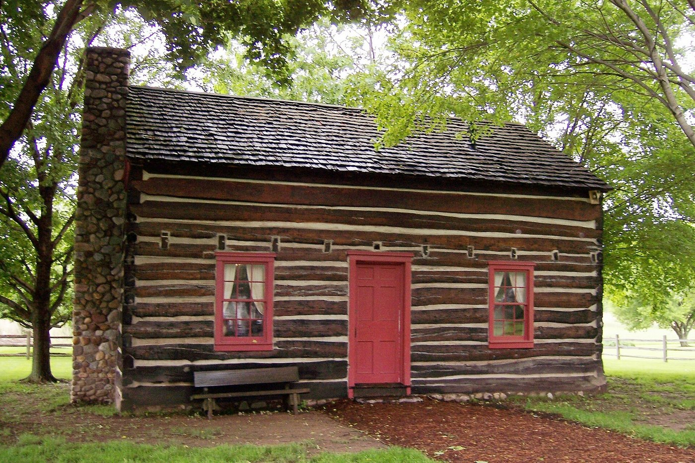
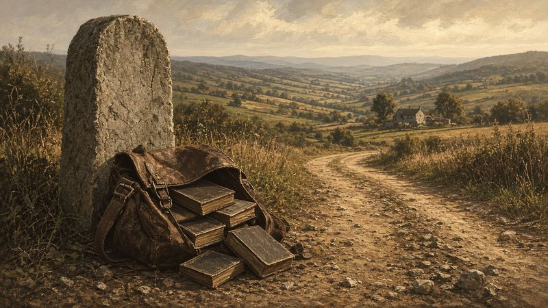
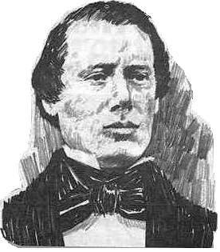
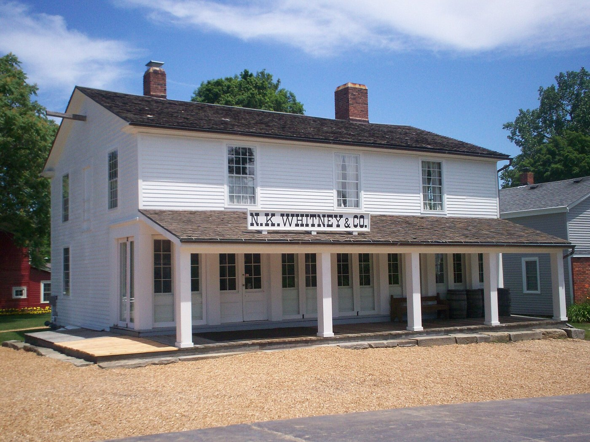
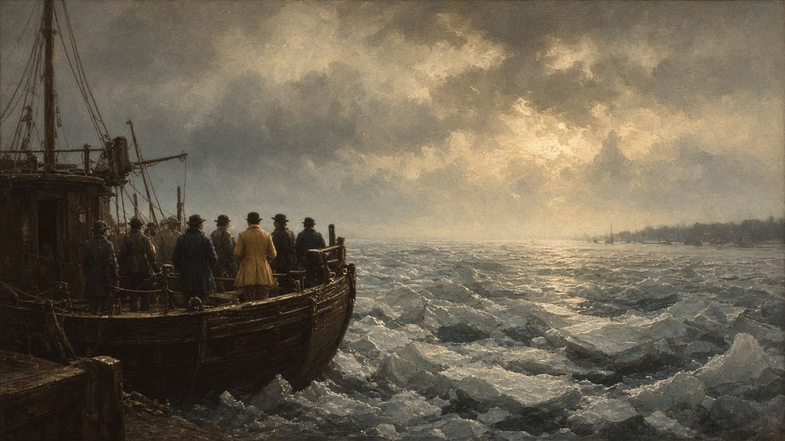

A Stream in Fayette
On April 6, 1830, a young man stood on the bank of a stream in Fayette, New York, and reached down to help his father up out of the water. Then he threw his arms around him and buried his face in his father’s chest, and he wept.1
He was twenty-four. Ten years earlier he had gone into the woods alone and come out with a story almost no one believed. Now his own father had gone down into the water on the strength of it. April water in western New York runs cold, and the old man would have come up gasping, his shirt plastered to him.†
It had not been an easy road to that stream, and the road ahead would be harder. But on that April day, with his father in his arms, the work had begun.
“Keep Your Coat On”
Go back a few months, to the winter before that baptism. Even before the book was bound, it had begun to stir the neighborhood. That winter of 1829–30, a former justice of the peace named Abner Cole, who rented Grandin’s press at night for his own newspaper, began printing pirated excerpts of the Book of Mormon alongside mocking commentary. Hyrum and Oliver confronted him, and he told them it was none of their business. They sent for Joseph.2
Joseph found Cole at the printing office reading his own paper. “Mr. Cole,” he said, “the Book of Mormon and the right of publishing it belong to me, and I forbid you meddling with it.” Cole threw off his coat, rolled up his sleeves and challenged Joseph to fight. Joseph smiled. “You had better keep your coat on,” he said. “It’s cold, and I am not going to fight you.” But, he added, “There is law… and you will find that out if you did not know it before.” Cole backed down and the excerpts stopped.3
Around the same time, a restless preacher named Solomon Chamberlin heard about the “Gold Bible” and came to the Smith door. “Is there anyone here,” he asked Hyrum, “that believes in visions or revelations?” Hyrum’s answer could stand as a motto for the family: “Yes,” he said, “we are a visionary house.”4
A Log House in Fayette
On Tuesday, April 6, 1830, people began arriving at the log home of Peter and Mary Whitmer in Fayette, New York. It was not a large house. By the time the meeting began, around forty men and women had crowded into it and around it.5 Picture benches and borrowed chairs, people standing shoulder to shoulder in the doorway, and faces at the windows.†

They had come to see a church organized. The revelation that would guide it, now known as Doctrine and Covenants section 20, opened with a sense of history: “The rise of the Church of Christ in these last days, being one thousand eight hundred and thirty years since the coming of our Lord and Savior Jesus Christ in the flesh, it being regularly organized and established agreeable to the laws of our country, by the will and commandments of God, in the fourth month, and on the sixth day.”6 To meet the requirements of New York law, six people were named as the church’s founding members.7
Joseph and Oliver asked the congregation whether they accepted them as their teachers in the things of the kingdom of God and whether they agreed that the time had come to organize. Every hand went up. Joseph then laid his hands on Oliver’s head and ordained him an elder in the church; Oliver did the same for Joseph. They blessed bread and wine in remembrance of Christ, and laid their hands on those who had been baptized to confirm them and give them the gift of the Holy Ghost. “The Lord’s Spirit was poured out on those in the meeting,” Saints records, “and some in the congregation began to prophesy.”8
That day Joseph received the first revelation addressed to the church as a whole. “Behold, there shall be a record kept among you,” it began. It said that in that record Joseph “shalt be called a seer, a translator, a prophet, an apostle of Jesus Christ,” and told the members: “his word ye shall receive, as if from mine own mouth, in all patience and faith.”9
“I Have Lived to See My Father Baptized”
After the meeting, Joseph stood on the bank of a stream and watched his parents go down into the water.
It was a moment decades in the making. Joseph Sr. had once belonged to a Universalist society and had long kept away from the churches. Lucy had searched for the true church since her near-death covenant in Randolph, and had been baptized years earlier by a minister who let her belong to no congregation. Now both were baptized together into the church their son had organized.10
This was the moment at the stream. Joseph Knight Sr., who was there, remembered what Joseph cried out as he held his father, his face buried in his father’s chest: “My God, I have lived to see my father baptized into the true church of Jesus Christ!”11
That evening he slipped away into the woods. When Joseph Knight and Oliver found him later that night, he was weeping. Ten years earlier he had gone into the trees alone and come out with a message no one wanted to hear. Now his father and mother believed it with him.12 “His joy was full,” Saints says. “The work had begun.”13
A Knapsack of Books
The new church had a book to share, and the Smith family set out to share it.


Joseph’s younger brother Samuel, twenty-two, had been baptized in Harmony the year before, soon after Joseph and Oliver.14 That spring he loaded copies of the Book of Mormon into a knapsack and set out west of Manchester on foot to sell them. Lucy recorded what happened on one of his first days. At a tavern he asked the landlord whether he would like to buy “a history of the origen of the Indians.” When the man asked where it came from, Samuel told him it had been translated by his brother “from some gold plates that he found buried in the Earth.” The landlord swore at him and threw him out. Lucy wrote that “this was the 5th time he had been turned out of doors that day.” Samuel slept that night “upon the cold damp ground” under an apple tree. The next morning a poor widow fed him. She believed what he told her but could not afford a book, so he gave her one.15
At Bloomington, he left a copy with a Methodist preacher named John P. Greene, who promised to see whether anyone on his preaching circuit wanted to buy it. On Samuel’s return, Greene’s wife, Rhoda, told him there was no interest; he had better take the book back. Samuel, in his own words as his mother recorded them, “binding my knapsack upon my shoulders, arose to depart; but, as I bade her farewell, it was impressed upon my mind to leave the book with her. I made her a present of it, and told her that the spirit forbade my taking it away. She burst into tears, and requested me to pray with her.”16
Samuel went home thinking his mission a failure. Dust on his boots. A lighter pack.† Picture him on the road back to Manchester, the knapsack lighter by one book, with nothing to show for it.† But Rhoda read the book and persuaded her husband to read it. Both were baptized. They gave it to Rhoda’s brother Phineas Young. “It was next handed to Brigham Young,” Lucy wrote, “and from him to Mrs. Fanny Young Murray, his sister.”17 Brigham Young would become the second President of the Church and lead the Saints west after Joseph’s death. That chain began with a book left behind on a doorstep.
“I Too Had Been in Bonds”
The new faith cost the Smith family dearly that first year. In the fall of 1830 a Quaker neighbor who held a note against Joseph Sr. came to the house demanding immediate payment. Joseph Sr. could pay six dollars and asked for time for the rest. Lucy recorded what the man said next, gesturing toward the fireplace: “thee will burn up them Books of Mormons; but, if thee will burn them up, then I will forgive thee the whole debt.” Joseph Sr. answered simply, “That, I shall not do.” Lucy took the gold beads from her own neck and offered them for the balance. The man refused.18
“We shall not burn the Book of Mormon,” Lucy told him, “nor deny the inspiration of the Almighty.” A constable took her husband away to the jail in Canandaigua, and ate the dinner she had made for him.19
When Samuel reached him days later, the fifty-nine-year-old had been held in a cell with a man charged with murder and given almost nothing to eat. He told his son what had sustained him:
I shuddered when I first heard these heavy doors creaking upon their hinges; but then, I thought to myself, I was not the first man, who had been imprisoned for the truth’s sake. And when I should meet Paul in the paradise of God, I could tell him, that I too had been in bonds for gospel which he preached.20
He spent thirty days in confinement, working in a cooper’s shop in the jail yard, and preached every Sunday. When he was released, Lucy noted, “he baptized two persons, whom he had thus converted.”21 The man who had once kept away from every church was now its missionary.
Colesville
In June 1830 Joseph, Emma and Oliver went to Colesville, New York, home of the Knight family. Joseph Knight Sr. had supported Joseph since the days of the plates, and earlier that spring Joseph had prayed over Knight’s son Newel in what he called the first miracle performed in the church. “It was done by God,” he said, “and by the power of godliness.”22
Now the Knights and others were ready for baptism, and so was Emma. The men dammed a stream to make a pool. During the night someone tore the dam down. They held a Sunday meeting instead, and rebuilt the dam early Monday morning. Oliver baptized Emma, Joseph and Polly Knight, and ten others while men on the bank jeered.23
That evening, as the new members gathered to be confirmed, a constable arrested Joseph for disturbing the peace by preaching the Book of Mormon. He was tried and acquitted, arrested again on similar charges, and tried and released again. Emma waited and prayed at her sister’s house while it went on.24 Joseph and Emma went home to Harmony before she could even be confirmed.
“An Elect Lady”
For her husband’s calling, Emma had already lost her family’s approval, her first child and the privacy of her home. That July Joseph received a revelation for her. It is the only revelation in the Doctrine and Covenants addressed to a woman by name.
Hearken unto the voice of the Lord your God, while I speak unto you, Emma Smith, my daughter; for verily I say unto you, all those who receive my gospel are sons and daughters in my kingdom.25
It told her that her sins were forgiven, “and thou art an elect lady, whom I have called.” It asked her to be “a comfort unto my servant, Joseph Smith, Jun., thy husband, in his afflictions, with consoling words, in the spirit of meekness.” It gave her a calling of her own, “to make a selection of sacred hymns,” and added a line that Latter-day Saints have loved ever since: “For my soul delighteth in the song of the heart; yea, the song of the righteous is a prayer unto me, and it shall be answered with a blessing upon their heads.”26
“Wherefore,” it closed, “lift up thy heart and rejoice, and cleave unto the covenants which thou hast made.”27 Emma’s hymnbook appeared in 1835 and gave the young church its first common voice in worship.28 Not long after the revelation, she was confirmed.
“No One … Excepting My Servant Joseph”
The church’s first serious crisis came that summer, and it came from inside the family of believers. Hiram Page, one of the Eight Witnesses, had begun receiving what he believed were revelations for the church through a stone of his own. Many believed them, including Oliver Cowdery and some of the Whitmers.29
Joseph prayed through the night. Outside, the Fayette fields lay silent under the stars.† The answer came as a revelation addressed to Oliver: “No one shall be appointed to receive commandments and revelations in this church excepting my servant Joseph Smith,” for “all things must be done in order, and by common consent in the church.” At a conference that September, the members set aside Hiram Page’s revelations and unanimously sustained Joseph.30 The church would have one prophet at a time, and it would govern itself by the consent of its members.
The same revelation sent Oliver on a mission far to the west, to the American Indians, whom the Book of Mormon described as a remnant of the house of Israel. Parley P. Pratt, Peter Whitmer Jr. and Ziba Peterson were called to go with him. Emma and the other women of Fayette spun, wove and sewed clothes for the missionaries.31
A Preacher Named Parley
Parley Pratt had himself come into the church only weeks earlier, in a way that seemed to him providential. A farmer turned preacher, he had sold his farm in Ohio to go preach the gospel as he understood it from the Bible. Traveling east by canal with his wife, Thankful, he felt impressed to get off the boat. “I will come soon,” he told her. “I have a work to do in this region.”32
A few miles inland a Baptist deacon showed him a strange new book, the same book Samuel was carrying from door to door in his knapsack. Parley read the title page and the witnesses’ testimonies, then began at the beginning, and could not stop. “Eating and sleeping were a burden,” Saints records. He went looking for the translator, found Hyrum Smith instead, talked with him most of the night, and was baptized a few days later.33
On the way west, in the fall of 1830, Parley led the missionaries to northeastern Ohio to see his former pastor, Sidney Rigdon. Rigdon was a powerful Reformed Baptist preacher with a congregation in and around Kirtland. Many of them, like Isaac and Lucy Morley, were already trying to live like the New Testament saints, with “all things common.”34
Rigdon was polite and unconvinced. The Bible was enough for him, he said. “You brought the truth to me,” Parley reminded him. “I now ask you as a friend to read this for my sake.” Rigdon agreed, though he said, “You must not argue with me on the subject.” He read, and found he could not dismiss it. Joining would cost him his living as a minister. He asked his wife, Phebe, whether she was willing to follow him into poverty again. “I have counted the cost,” she answered. “It is my desire to do the will of God, come life or come death.”35
The Rigdons were baptized, and so were many in his congregation and the Morley household. Oliver wrote back to Joseph: “There is considerable call here for books, and I wish you would send five hundred.”36 That spring, Samuel had been turned away from five doors in a single day. Now the book was being asked for by the hundreds. Then the missionaries walked on toward Missouri through deep snow. A small church in New York had suddenly found a larger family in Ohio.
“Of One Heart and One Mind”
Through all of this, between the arrests and the arguments, there was a Bible open on a table. Oliver had bought it at Grandin’s bookstore, and Joseph had begun a careful, prayerful study of it beginning with Genesis, seeking inspiration about its passages.37 We can imagine him bent over it by candlelight.† Out of that study came revelations that Latter-day Saints now read as the Book of Moses.
The first is a vision of Moses on a high mountain, seeing the earth and its peoples and asking God why he made them. The answer is the verse that may best sum up Latter-day Saint belief about the purpose of life: “For behold, this is my work and my glory—to bring to pass the immortality and eternal life of man.”38
Later, with Sidney Rigdon as his scribe, Joseph dictated an expanded account of Enoch, who in Genesis “walked with God: and he was not; for God took him.”39 In the new text, Enoch gathered a people so righteous that “the Lord called his people Zion, because they were of one heart and one mind, and dwelt in righteousness; and there was no poor among them.”40
That verse became a goal the young church never stopped reaching for. In Colesville, the Saints pooled their means so the poor among them could make the journey west.41 In Kirtland, converts like the Morleys were already trying to share all things. They often fell short. But from then on, Zion was not only a hill in Jerusalem in their vocabulary. It was also a description of a people.
“Thou Art the Man!”
Late in 1830 Sidney Rigdon traveled east to meet Joseph, bringing his friend Edward Partridge, a hatmaker. Soon afterward the Lord directed the New York Saints to gather to Ohio. It was a hard commandment. Many had worked for years to build their farms. They would have to sell quickly, and at a loss.42

Joseph and Emma left for Kirtland that winter by sleigh. Emma was pregnant with twins and still recovering from a long illness, but she insisted on going. On February 4, a sleigh pulled up to a store in Kirtland owned by Newel K. Whitney. A twenty-five-year-old stepped out, strode inside and reached his hand across the counter. “Newel K. Whitney!” he cried. “Thou art the man!”
Whitney shook his hand, confused. “You have the advantage of me. I could not call you by name, as you have me.”
“I am Joseph the prophet,” the visitor said. “You have prayed me here, now what do you want of me?”43 Whitney and his wife, Elizabeth Ann, had in fact been praying to know how to receive the gift of the Holy Ghost.44 Joseph and Emma lived with the Whitneys for a time.
The Ice at Buffalo
That spring the rest of the New York Saints followed. Joseph’s mother, Lucy, now in her mid-fifties, took charge of a company of about eighty from Fayette, traveling by canal boat to Buffalo and from there by lake steamer.45 It was a miserable trip. The canal broke. Some of the sisters, Lucy wrote with dry humor, kept wishing they were back home where “we could sit in our rocking chairs and take as much comfort as we pleased.” At Buffalo the harbor was choked with ice, reported to be piled twenty feet high. The captain expected to wait two weeks.46

Wind came off the lake across the ice, and the company grumbled.† Then a man on shore called out, “Is the Book of Mormon true?” Lucy answered him:
That book… was brought forth by the power of God, and translated by the gift of the Holy Ghost; and, if I could make my voice to sound as loud as the trumpet of Micheal the Arch Angel, I would declare the truth of the same from land to land, and from sea to sea.47
Then she turned to her own people and told them that if they would all pray “that the ice may be broke up, and we be set at liberty, as sure as the Lord lives it will be done.” In her account, “at that instant a noise was heard like bursting thunder.” The ice parted, “leaving barely a pathway for the boat,” so narrow that the paddle buckets were torn off as they squeezed through, and it closed again behind them. In Buffalo, onlookers were so sure the overloaded boat would sink that a newspaper reported them lost. “When we arrived at Fairport,” Lucy wrote, “we read the news of our own death in the Newspapers.”48
Lucy’s account was written years later, and readers may weigh it as they will. She herself had no doubt whose hand had opened the ice. But when eighty people needed someone to lead them through ice and complaint, it was Mother Smith.
Come and See
When Philip told his friend Nathanael that he had found the one “of whom Moses in the law, and the prophets, did write,” Nathanael doubted. Could anything good come from a village as small as Nazareth? Philip did not argue. He said, “Come and see.”49
That was the pattern from the first. Samuel did not argue with Rhoda Greene; he left her a book. Parley did not argue with Sidney Rigdon; he asked him to read “for my sake.” Even Joseph, stepping into a store in Kirtland, did not preach. He held out his hand.
Within a year of that crowded meeting in a log house, the church had moved its center nearly three hundred miles west, and many of its members had never met Joseph Smith. Many of them had first met a book. Its people were poor and inexperienced, and many were still trying to understand what they had joined. Ahead of them in Kirtland lay revelation, sacrifice and a house built for the Lord, and in it, the fulfillment of a promise made to the house of Israel. Ahead of Joseph and Emma, before any of that, lay a grief they could not yet see.
Key: † marks imagined connective detail. Atmospheric details marked † without a note (weather, light, sound, small gestures) are imagined and drawn from no source. Full citations and verification status are in 08-sources.md. Lucy Mack Smith is quoted from her 1845 history (JSP fair copy).
Notes
-
Saints, vol. 1, ch. 8, drawing on Joseph Knight Sr., Reminiscences. Told in full, with Joseph’s words, later in this chapter, in “I Have Lived to See My Father Baptized.” Joseph was born Dec. 23, 1805. ↩
-
Saints, vol. 1, ch. 8; Lucy Mack Smith, History, 1845, ch. 33, JSP. ↩
-
Saints, vol. 1, ch. 8 (from Lucy’s history). The Saints wording is used; Lucy’s 1845 text reads “There is law; and you will find that out, if you do not understand it; but I shall not fight you sir.” ↩
-
Saints, vol. 1, ch. 8. ↩
-
Saints, vol. 1, ch. 8, https://www.churchofjesuschrist.org/study/history/saints-v1/08-rise-of-the-church-of-christ. † The benches, chairs and faces at the windows are imagined; the small house and the crowd of about forty are documented. ↩
-
Doctrine and Covenants 20:1. ↩
-
Saints, vol. 1, ch. 8. See
08-sources.mdon the names of the six. ↩ -
Saints, vol. 1, ch. 8. ↩
-
Doctrine and Covenants 21:1, 5. ↩
-
Saints, vol. 1, ch. 8; see Ch. 3 and 4 of this book for Lucy’s earlier baptism and Joseph Sr.’s Universalist ties. ↩
-
Saints, vol. 1, ch. 8, drawing on Joseph Knight Sr., Reminiscences, Church History Library. ↩
-
Saints, vol. 1, ch. 8. ↩
-
Saints, vol. 1, ch. 8. ↩
-
Church History Topics, “Early Missionaries” (Samuel’s mission with a satchel of books). The baptism (May 1829, by Oliver Cowdery) follows JS, History, vol. A-1; see
08-sources.md. ↩ -
Lucy Mack Smith, History, 1845, 169–70, JSP, https://www.josephsmithpapers.org/paper-summary/lucy-mack-smith-history-1845/178. Original spelling retained. ↩
-
Lucy Mack Smith, History, 1845, 186–87, JSP, https://www.josephsmithpapers.org/paper-summary/lucy-mack-smith-history-1845/194. Lucy presents this as Samuel’s own account. ↩
-
Lucy Mack Smith, History, 1845, 187, JSP, https://www.josephsmithpapers.org/paper-summary/lucy-mack-smith-history-1845/195; Saints, vol. 1, ch. 9. † Samuel’s walk home is imagined. That he left thinking there was “no prospect” is documented. ↩
-
Lucy Mack Smith, History, 1845, 180, JSP, https://www.josephsmithpapers.org/paper-summary/lucy-mack-smith-history-1845/188. ↩
-
Lucy Mack Smith, History, 1845, 180–81, JSP. ↩
-
Lucy Mack Smith, History, 1845, 185, JSP, https://www.josephsmithpapers.org/paper-summary/lucy-mack-smith-history-1845/193. ↩
-
Lucy Mack Smith, History, 1845, 186, JSP, https://www.josephsmithpapers.org/paper-summary/lucy-mack-smith-history-1845/194. ↩
-
Saints, vol. 1, ch. 9, https://www.churchofjesuschrist.org/study/history/saints-v1/09-come-life-or-come-death. ↩
-
Saints, vol. 1, ch. 9. ↩
-
Saints, vol. 1, ch. 9. ↩
-
Doctrine and Covenants 25:1. ↩
-
Doctrine and Covenants 25:3, 5, 11–12. ↩
-
Doctrine and Covenants 25:13. ↩
-
Church History Topics, “Emma Hale Smith.” See
08-sources.md. ↩ -
Saints, vol. 1, ch. 9. ↩
-
Doctrine and Covenants 28:2, 13; Saints, vol. 1, ch. 9. ↩
-
Saints, vol. 1, ch. 9; Doctrine and Covenants 28:8; 32:1–3. ↩
-
Saints, vol. 1, ch. 9 (from Parley P. Pratt’s Autobiography). ↩
-
Saints, vol. 1, ch. 9. ↩
-
Saints, vol. 1, ch. 10, https://www.churchofjesuschrist.org/study/history/saints-v1/10-gathered-in; Acts 2:44 (KJV). ↩
-
Saints, vol. 1, ch. 9. ↩
-
Saints, vol. 1, ch. 10 (Oliver Cowdery to Joseph Smith, Nov. 12, 1830). ↩
-
Saints, vol. 1, ch. 10. ↩
-
Moses 1:39 (Pearl of Great Price). ↩
-
Genesis 5:24 (KJV). ↩
-
Moses 7:18; Saints, vol. 1, ch. 10. ↩
-
Saints, vol. 1, ch. 10. ↩
-
Saints, vol. 1, ch. 10; Doctrine and Covenants 37:3; 38:31–32. ↩
-
Saints, vol. 1, ch. 10. ↩
-
Saints, vol. 1, ch. 10. ↩
-
Lucy Mack Smith, History, 1845, ch. 39–40, JSP; Saints, vol. 1, ch. 11. See
08-sources.mdon the size of the company. ↩ -
Lucy Mack Smith, History, 1845, 196–201, JSP, https://www.josephsmithpapers.org/paper-summary/lucy-mack-smith-history-1845/205. ↩
-
Lucy Mack Smith, History, 1845, 202, JSP, https://www.josephsmithpapers.org/paper-summary/lucy-mack-smith-history-1845/210. Lucy’s spelling “Micheal” retained. ↩
-
Lucy Mack Smith, History, 1845, 202–3, JSP, https://www.josephsmithpapers.org/paper-summary/lucy-mack-smith-history-1845/211. ↩
-
John 1:45–46 (KJV). ↩